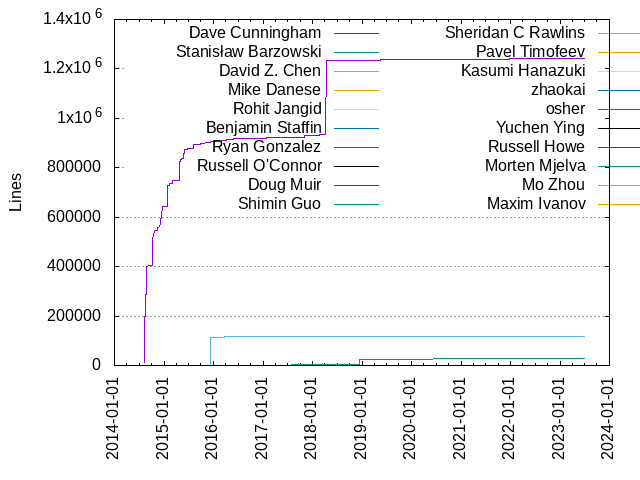

Authors
| Author | Commits (%) | + lines | - lines | First commit | Last commit | Age | Active days | # by commits |
|---|
| Dave Cunningham | 839 (72.39%) | 1241643 | 893332 | 2014-08-06 | 2023-06-14 | 3233 days, 18:50:52 | 318 | 1 |
| Stanisław Barzowski | 63 (5.44%) | 29538 | 4466 | 2017-07-11 | 2021-08-08 | 1488 days, 21:45:51 | 50 | 2 |
| David Z. Chen | 26 (2.24%) | 118263 | 125243 | 2015-09-08 | 2016-03-28 | 201 days, 17:55:15 | 19 | 3 |
| Mike Danese | 10 (0.86%) | 554 | 705 | 2016-01-07 | 2021-01-06 | 1825 days, 17:39:44 | 10 | 4 |
| Rohit Jangid | 8 (0.69%) | 277 | 89 | 2023-02-17 | 2023-06-13 | 116 days, 8:26:18 | 5 | 5 |
| Benjamin Staffin | 8 (0.69%) | 1014 | 197 | 2015-12-01 | 2017-08-06 | 613 days, 20:05:48 | 6 | 6 |
| Ryan Gonzalez | 6 (0.52%) | 89 | 37 | 2019-08-06 | 2019-08-08 | 2 days, 7:40:05 | 2 | 7 |
| Russell O'Connor | 5 (0.43%) | 6 | 5 | 2015-06-20 | 2015-12-30 | 193 days, 1:48:07 | 5 | 8 |
| Doug Muir | 5 (0.43%) | 698 | 416 | 2018-11-20 | 2018-12-12 | 21 days, 19:08:26 | 3 | 9 |
| Shimin Guo | 4 (0.35%) | 30 | 15 | 2016-05-19 | 2016-05-24 | 4 days, 10:10:39 | 4 | 10 |
| Sheridan C Rawlins | 4 (0.35%) | 73 | 9 | 2022-11-27 | 2022-12-03 | 5 days, 22:49:21 | 2 | 11 |
| Pavel Timofeev | 4 (0.35%) | 16 | 8 | 2021-06-22 | 2021-06-29 | 6 days, 13:07:21 | 3 | 12 |
| Kasumi Hanazuki | 4 (0.35%) | 31 | 16 | 2020-02-21 | 2021-12-02 | 649 days, 3:59:47 | 4 | 13 |
| zhaokai | 3 (0.26%) | 2 | 1 | 2015-03-01 | 2015-03-02 | 21:59:47 | 2 | 14 |
| osher | 3 (0.26%) | 6 | 2 | 2023-06-13 | 2023-07-03 | 19 days, 16:55:52 | 2 | 15 |
| Yuchen Ying | 3 (0.26%) | 66 | 14 | 2021-12-28 | 2021-12-29 | 10:19:45 | 2 | 16 |
| Russell Howe | 3 (0.26%) | 88 | 29 | 2021-03-11 | 2022-07-21 | 497 days, 2:27:37 | 3 | 17 |
| Morten Mjelva | 3 (0.26%) | 123 | 4 | 2023-05-25 | 2023-06-13 | 19 days, 5:52:21 | 2 | 18 |
| Mo Zhou | 3 (0.26%) | 22 | 9 | 2019-02-25 | 2019-03-27 | 29 days, 19:48:42 | 3 | 19 |
| Maxim Ivanov | 3 (0.26%) | 108 | 80 | 2018-04-09 | 2019-02-11 | 307 days, 23:04:41 | 2 | 20 |
These didn't make it to the top: Kai Zhao, Hanyu Cui, Deep Goel, Cam Hutchison, toge, sneivandt, neeke, Valentinas Janeiko, Tejesh Raut, Spencer Stephens, Saloni Juneja, Paul Furtado, Misha Brukman, Markus Padourek, Marcelo Cantos, Luis Buriola, Li Haoyi, KetchupBomb, Julien Pivotto, Joe Beda, Jaakko Kantojärvi, Gavin Dodd, Duologic, Dimiter 'malkia' Stanev, Denis Zamolodchikov, Brad King, Andrea Scarpino, Alexander Hurd, zuisong, zephyros-dev, yggoren, tmaisland, t0il3ts0ap, seongahjo, rbauduin, partcyborg, palkeo, nagstaku, mozamimy, jsmcnair, glickbot, bryanhuntesl, ahakanbaba, Yury Ershov, Yujun Zhang, Yaroslav Bolyukin, Xiaofeng, WÁNG Xuěruì, Trevor Hartman, Tomas, Thomas Neidhart, Thomas Minor, Thomas Haines, Sunil Thaha, Stephen Soltesz, Simon Legner, Simon Bein, Robert Vollmert, Pawel Sarbinowski, Pavlos Ratis, Paul Rudin, Pat Riehecky, Parijat Garg, Oliver Bristow, Nathan Owens, Michael Payne, Matthew Huxtable, Marko Mikulicic, Marcono1234, Manuel Hutter, Luz M. Costa, Luke Jolly, Lucendio, Lorenz Brun, Kurt Schwehr, Julien Vey, Josh Toft, John Huffaker, Jess Thrysoee, Jeroen Op 't Eynde, Jayme Bird, James Turley, Jake W, Jacob Straszynski, J. Gavin Ray, Iryna Dobrovolska, Igor Peshansky, Ian Chen, Hercules Merscher, Hans-J. Schmid, Griffin Downs, Greg Roodt, Graham Rounds, Graham Inggs, Graham Ambrose, Gasol Wu, Gagandeep Singh Makhija, Furhan Shabir, Fedya Labounko, Falco Nogatz, Erik Cederstrand, Denis Sikuler, David Poirier, David Coles, David C Wang, Darío Hereñú, Chaoyu Yang, Brett Viren, Brad Burlage, Benjamin Elder, Ben Brown, Arunprasad Rajkumar, Angus Lees, Andrii Oriekhov, Andrew Chen, Andrea Bedini, Andre Abrantes, Alexandre Moreno, Alex Rebert, Alex Helfet
Only top 20 authors shown
Only top 20 authors shown
| Month | Author | Commits (%) | Next top 5 | Number of authors |
|---|
| 2023-07 | osher | 1 (100.00% of 1) | | 1 |
| 2023-06 | osher | 2 (16.67% of 12) | Rohit Jangid, Morten Mjelva, Tejesh Raut, Jeroen Op 't Eynde, Hercules Merscher | 9 |
| 2023-05 | Rohit Jangid | 4 (57.14% of 7) | Deep Goel, Morten Mjelva | 3 |
| 2023-04 | Dave Cunningham | 8 (57.14% of 14) | toge, zephyros-dev, Thomas Neidhart, Tejesh Raut, Rohit Jangid | 6 |
| 2023-03 | Saloni Juneja | 2 (66.67% of 3) | Dave Cunningham | 2 |
| 2023-02 | Rohit Jangid | 1 (100.00% of 1) | | 1 |
| 2023-01 | zuisong | 1 (100.00% of 1) | | 1 |
| 2022-12 | Sheridan C Rawlins | 1 (100.00% of 1) | | 1 |
| 2022-11 | Sheridan C Rawlins | 3 (100.00% of 3) | | 1 |
| 2022-10 | Dave Cunningham | 16 (94.12% of 17) | WÁNG Xuěruì | 2 |
| 2022-09 | nagstaku | 1 (50.00% of 2) | Falco Nogatz | 2 |
| 2022-08 | tmaisland | 1 (50.00% of 2) | Dave Cunningham | 2 |
| 2022-07 | Russell Howe | 1 (100.00% of 1) | | 1 |
| 2022-06 | Dave Cunningham | 2 (40.00% of 5) | Furhan Shabir, Duologic, Andrea Scarpino | 4 |
| 2022-05 | Duologic | 1 (100.00% of 1) | | 1 |
| 2022-03 | David Poirier | 1 (50.00% of 2) | Andrii Oriekhov | 2 |
| 2022-01 | KetchupBomb | 2 (40.00% of 5) | Brad King, Angus Lees | 3 |
| 2021-12 | Dave Cunningham | 6 (50.00% of 12) | Yuchen Ying, Russell Howe, Kasumi Hanazuki, J. Gavin Ray | 5 |
| 2021-10 | bryanhuntesl | 1 (50.00% of 2) | Alex Rebert | 2 |
| 2021-09 | Dave Cunningham | 3 (60.00% of 5) | Erik Cederstrand, Arunprasad Rajkumar | 3 |
| 2021-08 | Tomas | 1 (33.33% of 3) | Stanisław Barzowski, Dave Cunningham | 3 |
| 2021-07 | Yury Ershov | 1 (100.00% of 1) | | 1 |
| 2021-06 | Pavel Timofeev | 4 (44.44% of 9) | Jaakko Kantojärvi, partcyborg, Sunil Thaha, Pat Riehecky | 5 |
| 2021-05 | rbauduin | 1 (50.00% of 2) | Jayme Bird | 2 |
| 2021-04 | Julien Pivotto | 1 (50.00% of 2) | Alexandre Moreno | 2 |
| 2021-03 | Russell Howe | 1 (33.33% of 3) | Marcono1234, Ian Chen | 3 |
| 2021-02 | jsmcnair | 1 (50.00% of 2) | Kurt Schwehr | 2 |
| 2021-01 | Stanisław Barzowski | 2 (22.22% of 9) | Hanyu Cui, Yaroslav Bolyukin, Mike Danese, Manuel Hutter, Greg Roodt | 7 |
| 2020-12 | Hanyu Cui | 1 (100.00% of 1) | | 1 |
| 2020-11 | Valentinas Janeiko | 2 (50.00% of 4) | Stanisław Barzowski | 2 |
| 2020-10 | Denis Zamolodchikov | 2 (28.57% of 7) | glickbot, Stanisław Barzowski, Simon Legner, Kasumi Hanazuki, James Turley | 6 |
| 2020-09 | Stanisław Barzowski | 1 (50.00% of 2) | Iryna Dobrovolska | 2 |
| 2020-08 | Thomas Minor | 1 (33.33% of 3) | Jake W, Dave Cunningham | 3 |
| 2020-07 | Stanisław Barzowski | 2 (66.67% of 3) | Robert Vollmert | 2 |
| 2020-06 | Stanisław Barzowski | 1 (33.33% of 3) | Cam Hutchison, Ben Brown | 3 |
| 2020-05 | Stanisław Barzowski | 5 (62.50% of 8) | palkeo, Jess Thrysoee, Dave Cunningham | 4 |
| 2020-04 | Dave Cunningham | 3 (60.00% of 5) | Mike Danese, Andrea Scarpino | 3 |
| 2020-03 | Dave Cunningham | 2 (66.67% of 3) | Kasumi Hanazuki | 2 |
| 2020-02 | Dave Cunningham | 4 (44.44% of 9) | Stanisław Barzowski, t0il3ts0ap, Kasumi Hanazuki | 4 |
| 2020-01 | seongahjo | 1 (50.00% of 2) | Lucendio | 2 |
| 2019-12 | Stanisław Barzowski | 5 (50.00% of 10) | Dave Cunningham, Nathan Owens, Griffin Downs | 4 |
| 2019-11 | Stanisław Barzowski | 1 (50.00% of 2) | Dave Cunningham | 2 |
| 2019-10 | Gagandeep Singh Makhija | 1 (33.33% of 3) | Dave Cunningham, Benjamin Elder | 3 |
| 2019-09 | Stanisław Barzowski | 4 (44.44% of 9) | Dave Cunningham, Graham Rounds | 3 |
| 2019-08 | Ryan Gonzalez | 6 (60.00% of 10) | Paul Rudin, Luz M. Costa, Jacob Straszynski, David C Wang | 5 |
| 2019-07 | Dave Cunningham | 6 (60.00% of 10) | Stanisław Barzowski, Graham Inggs, David Coles, Brett Viren | 5 |
| 2019-06 | Dave Cunningham | 2 (66.67% of 3) | Thomas Haines | 2 |
| 2019-05 | Dave Cunningham | 11 (68.75% of 16) | Alexander Hurd, yggoren, Pawel Sarbinowski, Markus Padourek | 5 |
| 2019-04 | Stanisław Barzowski | 3 (75.00% of 4) | Marko Mikulicic | 2 |
| 2019-03 | Dave Cunningham | 3 (37.50% of 8) | Stanisław Barzowski, Mo Zhou, Julien Vey | 4 |
| 2019-02 | Stanisław Barzowski | 2 (25.00% of 8) | Maxim Ivanov, Dave Cunningham, Mo Zhou, Mike Danese | 5 |
| 2019-01 | Dave Cunningham | 4 (66.67% of 6) | Oliver Bristow, Hans-J. Schmid | 3 |
| 2018-12 | Dave Cunningham | 6 (46.15% of 13) | Doug Muir, Stanisław Barzowski, Parijat Garg, Lorenz Brun | 5 |
| 2018-11 | Stanisław Barzowski | 1 (33.33% of 3) | Matthew Huxtable, Doug Muir | 3 |
| 2018-10 | Dave Cunningham | 4 (44.44% of 9) | sneivandt, Stephen Soltesz, Simon Bein, Josh Toft | 5 |
| 2018-09 | Dave Cunningham | 1 (100.00% of 1) | | 1 |
| 2018-08 | Stanisław Barzowski | 1 (100.00% of 1) | | 1 |
| 2018-07 | Dave Cunningham | 8 (88.89% of 9) | Graham Ambrose | 2 |
| 2018-06 | Li Haoyi | 2 (28.57% of 7) | mozamimy, Markus Padourek, Dimiter 'malkia' Stanev, Dave Cunningham, Chaoyu Yang | 6 |
| 2018-05 | Dave Cunningham | 3 (60.00% of 5) | Stanisław Barzowski, Michael Payne | 3 |
| 2018-04 | Dave Cunningham | 14 (77.78% of 18) | ahakanbaba, Yujun Zhang, Stanisław Barzowski, Maxim Ivanov | 5 |
| 2018-03 | Dave Cunningham | 4 (80.00% of 5) | Luke Jolly | 2 |
| 2018-02 | Dave Cunningham | 6 (54.55% of 11) | Marcelo Cantos, Stanisław Barzowski, Julien Pivotto, Cam Hutchison | 5 |
| 2018-01 | Dave Cunningham | 15 (71.43% of 21) | Luis Buriola, Gavin Dodd, Cam Hutchison, Andrea Bedini | 5 |
| 2017-12 | Dave Cunningham | 8 (88.89% of 9) | Dimiter 'malkia' Stanev | 2 |
| 2017-11 | Dave Cunningham | 6 (100.00% of 6) | | 1 |
| 2017-10 | Dave Cunningham | 9 (69.23% of 13) | Stanisław Barzowski, Spencer Stephens, Darío Hereñú | 4 |
| 2017-09 | Dave Cunningham | 5 (45.45% of 11) | Stanisław Barzowski, Misha Brukman, Alex Helfet | 4 |
| 2017-08 | Dave Cunningham | 18 (72.00% of 25) | Stanisław Barzowski, Benjamin Staffin, Andre Abrantes | 4 |
| 2017-07 | Stanisław Barzowski | 11 (52.38% of 21) | Dave Cunningham, Benjamin Staffin | 3 |
| 2017-06 | Dave Cunningham | 16 (100.00% of 16) | | 1 |
| 2017-05 | Dave Cunningham | 4 (57.14% of 7) | Joe Beda, Trevor Hartman | 3 |
| 2017-01 | Dave Cunningham | 31 (93.94% of 33) | John Huffaker, Brad Burlage | 3 |
| 2016-12 | Dave Cunningham | 6 (75.00% of 8) | Benjamin Staffin | 2 |
| 2016-11 | Dave Cunningham | 20 (90.91% of 22) | Benjamin Staffin | 2 |
| 2016-10 | Dave Cunningham | 10 (83.33% of 12) | Spencer Stephens, Benjamin Staffin | 3 |
| 2016-09 | Dave Cunningham | 2 (100.00% of 2) | | 1 |
| 2016-08 | Dave Cunningham | 5 (100.00% of 5) | | 1 |
| 2016-07 | Dave Cunningham | 6 (60.00% of 10) | neeke, Pavlos Ratis, Andrew Chen | 4 |
| 2016-06 | Dave Cunningham | 7 (87.50% of 8) | Xiaofeng | 2 |
| 2016-05 | Dave Cunningham | 33 (89.19% of 37) | Shimin Guo | 2 |
| 2016-04 | Dave Cunningham | 40 (97.56% of 41) | Igor Peshansky | 2 |
| 2016-03 | Dave Cunningham | 21 (63.64% of 33) | David Z. Chen, Mike Danese | 3 |
| 2016-02 | Dave Cunningham | 12 (70.59% of 17) | Mike Danese, Gasol Wu | 3 |
| 2016-01 | Dave Cunningham | 11 (84.62% of 13) | Mike Danese | 2 |
| 2015-12 | Dave Cunningham | 22 (78.57% of 28) | Russell O'Connor, David Z. Chen, Benjamin Staffin | 4 |
| 2015-11 | Dave Cunningham | 25 (100.00% of 25) | | 1 |
| 2015-10 | Dave Cunningham | 22 (84.62% of 26) | David Z. Chen | 2 |
| 2015-09 | Dave Cunningham | 23 (71.88% of 32) | David Z. Chen | 2 |
| 2015-08 | Dave Cunningham | 30 (100.00% of 30) | | 1 |
| 2015-06 | Dave Cunningham | 22 (91.67% of 24) | Russell O'Connor | 2 |
| 2015-05 | Dave Cunningham | 33 (100.00% of 33) | | 1 |
| 2015-04 | Dave Cunningham | 14 (100.00% of 14) | | 1 |
| 2015-03 | Dave Cunningham | 10 (58.82% of 17) | zhaokai, Paul Furtado, Kai Zhao | 4 |
| 2015-02 | Dave Cunningham | 16 (94.12% of 17) | Kai Zhao | 2 |
| 2015-01 | Dave Cunningham | 11 (100.00% of 11) | | 1 |
| 2014-12 | Dave Cunningham | 37 (100.00% of 37) | | 1 |
| 2014-11 | Dave Cunningham | 14 (100.00% of 14) | | 1 |
| 2014-10 | Dave Cunningham | 14 (100.00% of 14) | | 1 |
| 2014-09 | Dave Cunningham | 12 (100.00% of 12) | | 1 |
| 2014-08 | Dave Cunningham | 106 (100.00% of 106) | | 1 |
| Year | Author | Commits (%) | Next top 5 | Number of authors |
|---|
| 2023 | Dave Cunningham | 10 (25.64% of 39) | Rohit Jangid, osher, Morten Mjelva, Deep Goel, toge | 14 |
| 2022 | Dave Cunningham | 19 (48.72% of 39) | Sheridan C Rawlins, KetchupBomb, Duologic, Brad King, tmaisland | 15 |
| 2021 | Dave Cunningham | 10 (20.00% of 50) | Pavel Timofeev, Yuchen Ying, Stanisław Barzowski, Russell Howe, Jaakko Kantojärvi | 31 |
| 2020 | Stanisław Barzowski | 15 (30.00% of 50) | Dave Cunningham, Kasumi Hanazuki, Valentinas Janeiko, Denis Zamolodchikov, t0il3ts0ap | 22 |
| 2019 | Dave Cunningham | 37 (41.57% of 89) | Stanisław Barzowski, Ryan Gonzalez, Mo Zhou, Maxim Ivanov, Alexander Hurd | 27 |
| 2018 | Dave Cunningham | 62 (60.19% of 103) | Stanisław Barzowski, Doug Muir, sneivandt, Marcelo Cantos, Luis Buriola | 27 |
| 2017 | Dave Cunningham | 106 (75.18% of 141) | Stanisław Barzowski, Misha Brukman, Joe Beda, Benjamin Staffin, Trevor Hartman | 13 |
| 2016 | Dave Cunningham | 173 (83.17% of 208) | David Z. Chen, Mike Danese, Benjamin Staffin, Shimin Guo, neeke | 12 |
| 2015 | Dave Cunningham | 228 (88.72% of 257) | David Z. Chen, Russell O'Connor, zhaokai, Kai Zhao, Paul Furtado | 7 |
| 2014 | Dave Cunningham | 183 (100.00% of 183) | | 1 |
| Domains | Total (%) |
|---|
| google.com | 589 (50.82%) |
|---|
| gmail.com | 453 (39.09%) |
|---|
| users.noreply.github.com | 24 (2.07%) |
|---|
| davidzchen.com | 7 (0.60%) |
|---|
| databricks.com | 6 (0.52%) |
|---|
| fitbit.com | 5 (0.43%) |
|---|
| yahooinc.com | 4 (0.35%) |
|---|
| rollingapple.net | 4 (0.35%) |
|---|
| qq.com | 4 (0.35%) |
|---|
| yegle.net | 3 (0.26%) |
|---|